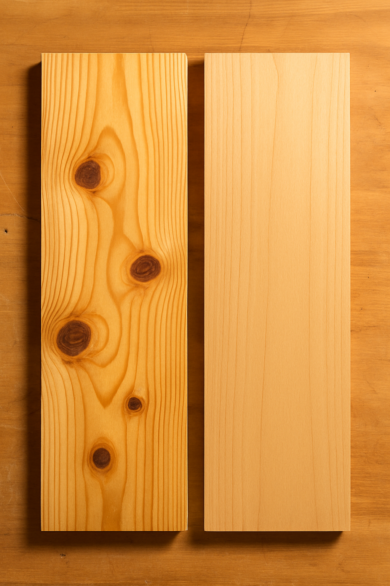
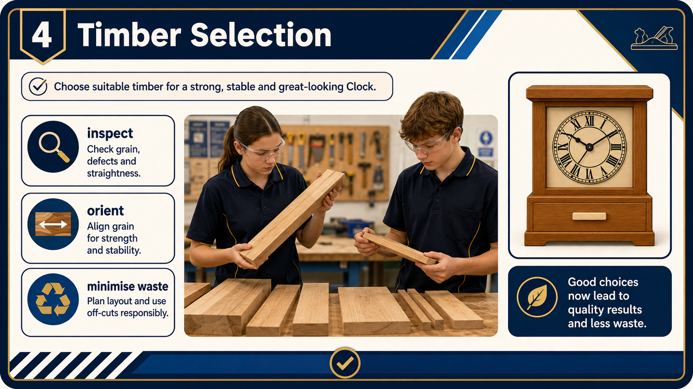
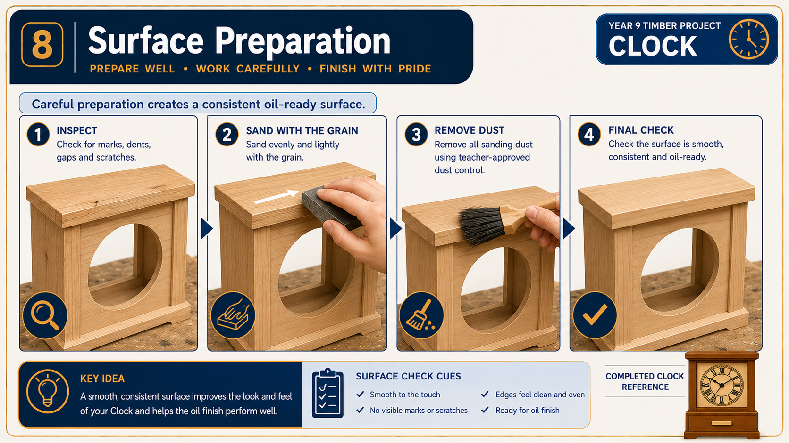

Module presentation
Learn with the slides
Use the presentation to preview Timber stability, material choice and surface preparation, then work through the theory, checks and written evidence below.
Project plan and evidence
Use the plan and save evidence
Use the supplied Clock project plan alongside the module, then open the folio when your evidence is ready.
Your work
Student details
Your entries save automatically in this browser. Use Download evidence PDF before leaving the page.
Weeks 11-12
This module
Connect timber behaviour and justified material choice with a controlled, oil-ready surface.
Theory 1
Timber moisture, seasoning and dimensional stability

Timber contains moisture because a tree naturally carries water through its structure while growing. After timber is cut, it continues to exchange moisture with the surrounding air. In damp conditions, timber may absorb moisture and expand. In warmer or drier conditions, it may lose moisture and shrink. This movement does not usually happen equally in every direction, so changes in moisture can affect the shape, size and flatness of a component.
Seasoning is the controlled drying of timber to make it more stable and suitable for use. Air seasoning uses natural airflow to remove moisture over an extended period. Timber is arranged so that air can circulate around it and it is protected from unsuitable weather conditions. Air seasoning is generally slower and depends on the surrounding climate. Kiln seasoning takes place in a controlled chamber where temperature, airflow and humidity are managed. It is generally faster and gives more control over the drying process. The method used for the Clock timber is not assumed; students work with the school-supplied material and follow teacher direction.
Well-seasoned timber is not timber that will never move. It is timber that has been dried appropriately and is reasonably stable in the conditions where it will be worked and used. Timber that is still adjusting to its surroundings may distort after it has been measured, shaped or assembled. This can reduce accuracy even when the original marking out was correct.
Before Clock components are used, inspect them under teacher direction for signs that may affect accuracy:
- Bowing: a length curves along its face.
- Cupping: the edges rise or fall across the width.
- Twisting: corners do not sit in the same flat plane.
- Checks or splits: cracks appear as timber dries or moves.
- Changing fit: a joint or drawer that fitted earlier becomes tighter, looser or uneven.
Dimensional stability is important throughout the Clock project. Stable components help rebate joints meet accurately and support a square carcass. They also help the hidden drawer slide and close without excessive gaps or binding. A stable surface is easier to prepare consistently and reduces the chance that later movement will affect the appearance of the oil finish. If a component appears distorted, damaged or unsuitable, do not attempt to correct it without approval. Stop and ask the teacher whether it should be repositioned, prepared differently or replaced according to the project drawing and workshop procedures.
Theory 2
Selecting timber for function, appearance and responsible use

Selecting timber is more than choosing the best-looking piece. Each Clock component has a particular job, so the timber assigned to it must be suitable for its function, appearance and position in the finished project. Students must inspect the school-supplied timber and approved off-cuts carefully, then match each piece to the component where its qualities will be most useful.
For structural components, consider whether the timber is sound, straight and stable enough to support accurate joints and assembly. Significant twisting, bowing, cupping, checks or splits may make accurate marking, jointing and fit difficult. Knots and other natural features do not automatically make timber unusable, but their size and position must be considered. A feature located near a joint, edge or narrow section may weaken the component or affect accuracy. Any uncertainty about suitability must be discussed with the teacher before the timber is marked or altered.
Visible components also require attention to grain direction, colour variation and surface appearance. Grain can create an attractive pattern, but the orientation should suit the shape of the component and the appearance of the completed Clock. Related visible parts may look more consistent when their grain and colour are considered together. This does not mean every component must look identical. Natural variation can improve the design when it is selected deliberately rather than left to chance.
Hardwoods and softwoods are broad timber groups, but the names do not guarantee that every hardwood is hard or every softwood is easy to work. Different timbers vary in density, durability, stability, grain and workability. Students should judge the actual material supplied and use approved course information and teacher guidance rather than relying only on its group name.
Use this selection process before assigning material:
- Check the component’s job: decide whether it is mainly structural, visible or part of the hidden drawer.
- Inspect the timber: look for suitable size, straightness, grain direction, defects, surface quality and signs of movement.
- Compare possible pieces: reserve the most suitable material for components where accuracy, strength or appearance matters most.
- Reduce waste: use approved off-cuts where they are sound, stable and large enough, especially for the hidden drawer.
- Record the decision: explain in the folio why the material was suitable and how the choice reduced unnecessary waste.
Responsible selection does not mean using every scrap. A poor-quality off-cut can cause inaccurate work, failure or extra waste later. The better choice is the smallest suitable piece that meets the drawing, cutting information and quality requirements.
Theory 3
Sanding for a consistent oil-ready surface

Sanding prepares the Clock surfaces for the approved three-coat oil finish. Its purpose is not simply to make the timber feel smooth. Careful sanding removes machining marks, small scratches and minor surface irregularities while keeping the Clock’s edges, faces and fitted parts accurate. A poorly prepared surface may show scratches, uneven colour or dull patches after oil is applied, so faults should be found and corrected before finishing begins.
Surface preparation should progress through the teacher-approved abrasive sequence. Each stage removes the scratch pattern left by the previous stage and replaces it with finer, less visible marks. Skipping stages or changing to a finer abrasive too soon may leave deeper scratches behind. These scratches can become more noticeable once oil enters the timber. The exact abrasive grades and final preparation requirements must come from teacher direction, the approved finish system and the relevant product information.
Where practical, sand in the direction of the grain. Scratches running across the grain are usually more visible because they cut across the natural pattern of the timber. Use controlled, even pressure rather than pressing heavily in one area. Uneven pressure can create hollows, soften corners or change the fit of components. Edges and corners require particular care. Repeated sanding over an edge can round it, alter a chamfer or spoil the visual alignment of the Clock carcass and hidden drawer.
Use the following inspection process before the surface is approved for oil:
- Check each visible face under suitable workshop lighting and view it from more than one angle.
- Look for scratches, dents, rough grain, glue contamination, uneven areas and marks left from earlier work.
- Compare adjoining faces and edges for consistent appearance and shape.
- Check that sanding has not changed the drawer fit, softened important edges or damaged completed details.
- Remove dust using the teacher-approved method, then inspect the surface again before applying any finish.
A surface is oil-ready when it is consistently prepared, free from visible sanding faults and clean enough for the approved finish system. Feeling the timber with clean hands may help locate rough areas, but touch alone is not enough. Visual inspection is essential because fine scratches and dust can remain even when the surface feels smooth. Do not apply oil until the teacher has confirmed that the preparation, cleaning method and work area meet the required procedure.
Guided practice
Weeks 11-12 knowledge checks
Choose an answer, check it and use the progressive hints and feedback to improve.
Apply your learning
Scaffolded written responses
Write first, use the feedback prompts, then compare your reasoning with the appropriate response example.
Finish the two-week block
Save your evidence
Your work saves in this browser, but browser storage is not the official submission. Download the module evidence PDF before changing devices or clearing browser data.
No marks, answers or personal information are sent from this webpage.